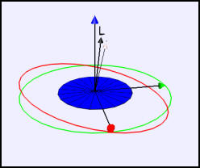

Feynman Plate.
The Feynman Plate model shows a spinning plate as seen in the space frame. The model is based on Feynman story in the book Surely You Are Joking, Mr. Feynman! that the wobble and spin of a Cornell cafeteria plate as it was tossed into the air during a food fight was in a 2:1 ratio. The simulation shows that the plate spins around its symmetry axis while the axis precesses uniformly in a small cone at a frequency very close to twice the spin frequency. Although this result can be derived analytically, this model solves the equations of motion numerically to test a simple quaternion-based numerical algorithm. The "Feynman's wobbling plate" article by Slavomir Tuleja, Boris Gazovic, Alexander Tomori, and Jozef Hanc in the American Journal of Physics vol 75 p240 (2007) gives an elementary account of the theory.
The following EJS models are described in Chapter 17 of the EJS adaptation of An Introduction to Computer Simulation Methods available in the ComPADRE digital library.
The Feynman Plate model was developed by Wolfgang Christian using the Easy Java Simulations (EJS) modeling tool version 4.3. You can examine and modify the model for this simulation if you have EJS installed by right-clicking within the program and selecting "Open Ejs Model" from the pop-up menu.
Information about EJS is available at: <http://www.um.es/fem/Ejs/> and in the OSP ComPADRE collection <http://www.compadre.org/OSP/>.